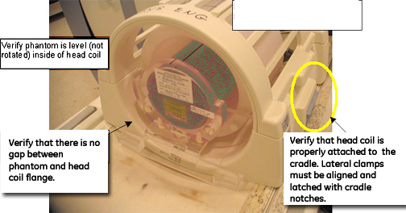
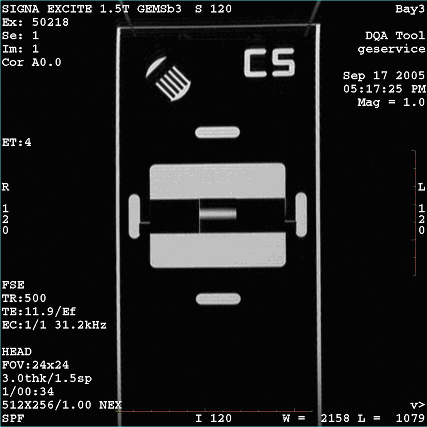
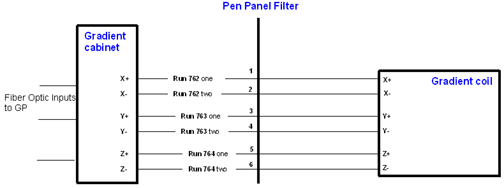
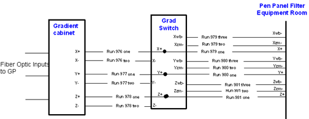

Operating Documentation
Direction 5670006, Rev# 1
Discovery MR750w GEM Service Methods
Module Version 6.0, Version Date 8/16/10
Operating Documentation |
See Table 2 to determine action if there are failures when using DQA II Tool.
| ||||
| The correct phantom type, position and landmark are all critical to successful operation of the DQA II Tool. See Table 1 and Illustration 1 or Illustration 2. | ||||
Table 1: DQA Phantom Depending on System
| System Type | Phantom | Illustration | Part Number |
|---|---|---|---|
| 1.5T with Old Style Head Coil | Green solution, no loader | 2 | 2131027-2 |
| 1.5T with New Style Head/Split Top Coil | Green solution with loader | 1 | 2322997-2 |
| 3.0T Long Bore Magnet (E2) | Clear solution, no loader | 2 | 2258365 |
| 3.0T Short Bore Magnet | Green solution with loader | 1 | 2322997-2 |
Illustration 1: Phantom Positioning for New Style or Split Top Head Coil

Illustration 2: Phantom Positioning for Old Style Head Coil

Illustration 3: Directional Gradient Information in Bore

Table 2: Potential Errors When Using DQA II Tool
| Symptom in DQA II Tool Actions Required Window | Recommendations | ||
| One or more gradients appear not to be functioning at all. | Verify the system can properly scan the head image. Refer to Section 2. | ||
| Z gradient coil appears to be driven by the wrong gradient input. |
| ||
| Z gradient polarity appears to be inverted. |
| ||
| Phantom used appears to be wrong and/or severely mispositioned. |
| ||
| Phantom is offset more than ±36 mm along Z. |
| ||
For any of the following:
|
| ||
For any of the following:
|
| ||
For any of the following:
|
|
Open the browser.
Review the last exam.
The DQA II Tool scans Axial images (example in Illustration 4) in one study, and creates a new exam or study (example in Illustration 5) for the Coronal images. A similar Axial should appear, but it may not be the center image.
Illustration 4: Axial Image

Illustration 5: Coronal Image

Prior to checking gradient cabling, verify that the gradient polarities in the Gradient Config file are properly set.
For magnets ramped positive (Red to + and Black to -), all values should be positive.
For magnets ramped negative or reversed ramped (Red to - and Black to +), all values should be negative.
To view Gradient config values:
Open a C-shell and type: cd /w/config.
Type: more GradientConfig.cfg.
Scroll down and highlight the desired file: xfull, yfull, zfull.
To review the entire contents of the file, type more out.
| NOTE: | For all TwinSpeed systems, review these files:GradientConfig.cfg.WHOLE and GradientConfig.cfg.ZOOM. |
| ||||
| The following illustration applies to Excite systems only. | ||||
Illustration 6: Gradient Cabling for BRM/CRM

| ||||
| The following illustrations apply to Excite systems only. | ||||
Illustration 7: Gradient Cabling for TRM in Equipment Room

Illustration 8: Gradient Cabling for TRM in Magnet Room

Illustration 9 is an example of a phantom rotated counterclockwise and grossly offset in the +X position.
Illustration 9: Example of Rotated and Offset Axial Image